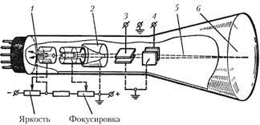

Осциллограф – прибор, предназначенный для визуального наблюдения и измерения
основных величин
переменного электрического сигнала. Основным блоками осциллографа являются:
ЭЛТ – предназначенная для преобразования энергии управляемого потока ё-ов в
световую энергию.
Источник питания (блок питания) – трансформатор выпрямители стабилизаторы.
Усилители (ХУ). Управление производится по 2-м каналам: х,у. Рабочим
является вход У.
Генератор развертки (ГПН), вырабатывает пилообразную форму напряжения,
которое подается на
пластины для горизонтальной развертки луча. (U развертки – U, перемещающее
электронный луч по
одновременно одинаковый заданной траектории).
Блок синхронизации – служит для синхронизации частоты входного сигнала с
частотой генератора
развертки.
Калибраторы переменные сопротивления, предназначенные для регулирования
яркости, фокусировки,
положения луча на экране.
Принцип работы ЭЛТ.
 Принцип действия ЭЛТ: вещества обладающие
способностью
светиться под действием кинетической энергии, подающих на них ё-ов, называют
люминофором (хим. состав
оксид цинка, сульфиды, силикаты).
Свечение люминофора носит называние люминесценции. Часть ЭЛТ, предназначенная
для формирования
электронного луча, называют электронным прожектором (пушкой). Термокатод 1
эмиссирует свободные
е-ы, которые образуют вблизи
катода пространственный заряд. Катод окружен металлическим цилиндром (модулятор 2) с
отверстием. На
модулятор 2 подается отрицательное U затруднящее вход е-ов через отверстие. На
первый анод 3,
выполненный в виде целиндра с перегородками,
имеющими отверстия подается положительное и U. Под действием эл. поля е-ы вылетают
из области
пространственного заряда к первому аноду. Часть из них попадая на анод 3 создает
анодный тока. Но
большинство свободных е-ов пролетают через
диафрагму первого анода и образуя электронной луч движутся ко второму аноду 4, на
который подано более
высокое положительное U, чем на первый анод. Первый анод называется фокусирующим,
т.к изменяя U на
этом аноде, можно добиться хорошей
фокусировки электронного луча. Второй анод называется ускоряющим, т.к его эл. поле
разгоняет е-ны до
скорости нескольких десятков тыс. км. в сек. Они пролетают через отверстие второго
анода м/у двумя
парами отклоняющих пластин 5 и
6 и ударяются в поверхность люминофора 7, вызывая появления на экране трубки –
светящейся точки.
5,6- Отключающие пластины предназначены для перемещения электронного луча по
экрану. Напряжение,
подведенное к отклоняющим
пластинам, создает эл. поле отклоняющее электронный луч в сторону – положительно
заряженной пластины
(электронный луч получает угловое отклонение).